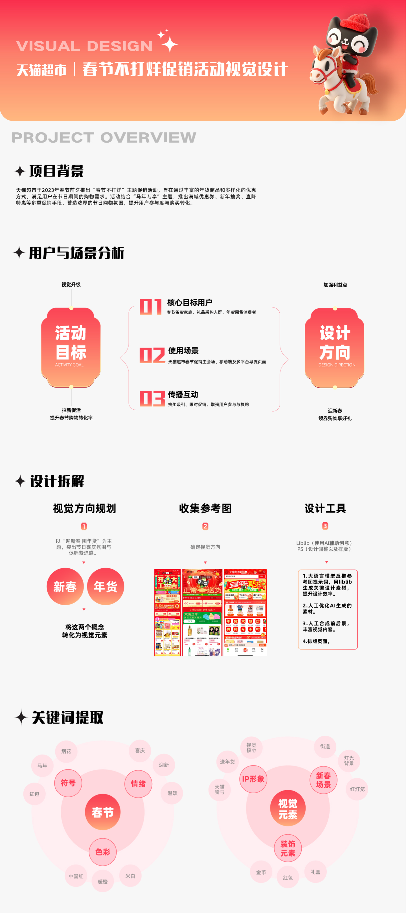
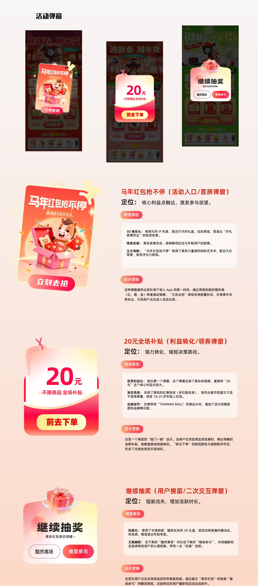
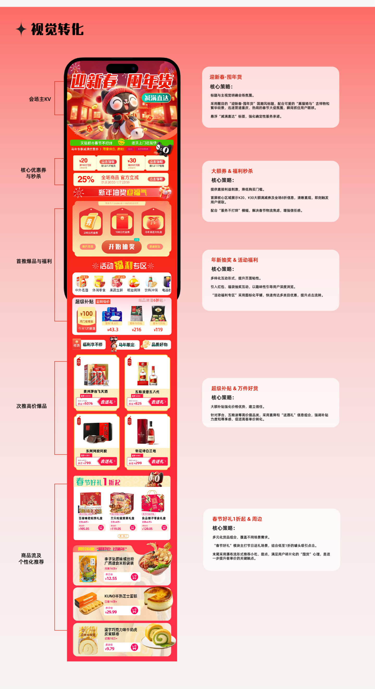

PROJECT 01
Marketing Visual Design
Project Note
This case file gathers selected marketing visuals made for online communication, campaign promotion, and e-commerce conversion.
Design Goals
Catch attention
Clarify information
Build campaign atmosphere
Guide action
Selected Visual Outputs
✦ Project Overview

PROJECT BACKGROUND · USER ANALYSIS · DESIGN BREAKDOWN
✦ Design Strategy & Visual Breakdown

VISUAL CONVERSION ANALYSIS · SECTION-BY-SECTION BREAKDOWN
✦ Campaign Main Page — Two Visual Directions

VER. A — WARM RED

VER. B — FRESH GREEN
✦ Campaign Pop-up & Interaction Design

POP-UP DESIGN LOGIC · THREE INTERACTION SCENARIOS
My Role
- Visual direction
- Layout design
- Campaign visual adaptation
- Image editing
- Basic motion support
What I Learned
These projects taught me that marketing visuals are not only about impact. They are about timing, clarity, and trust.